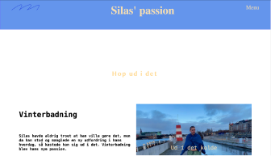
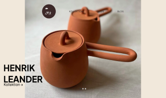

GRUNDLÆGGENDE
INDHOLD

PASSIONSITE
I første del af emnet Indhold, skulle vi lave en side med en video som omhandlede en med en passion. Vi gjorde det i grupper af to, og filmede videoen sammen, men klippede den sammen og lavede siden hver for sig. Her skulle vi lave en lottiefile også som skulle inkorporeres på vores endelige side.
REDESIGN AF VIRKSOMHEDSSIDE
I anden del af emnet skulle vi lave et redesign af en virksomheds hjemmeside. Vi lavede det i grupper af fire. Min gruppe lavede et redesign af en keramikhjemmeside, vi lavede dagens scrum og skrev vores to-dos i et trello board, så vi vidste hvad vi havde lavet og hvad vi manglede. I denne proces har jef rykket mig på mange parametre. Både i JavaScript, brugen og forståelsen af grid og generel design af en hjemmeside, og den proces som kommer før det.
